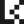
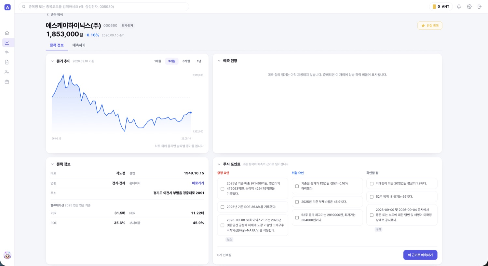
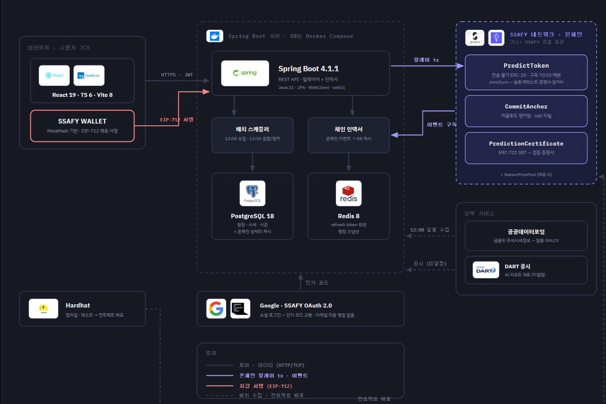
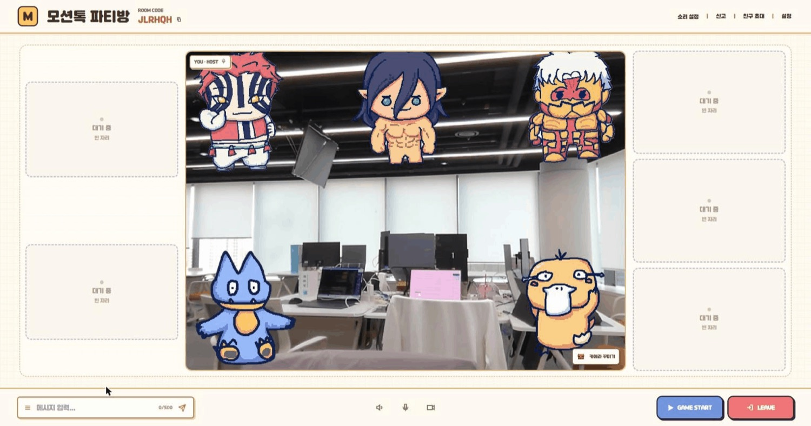
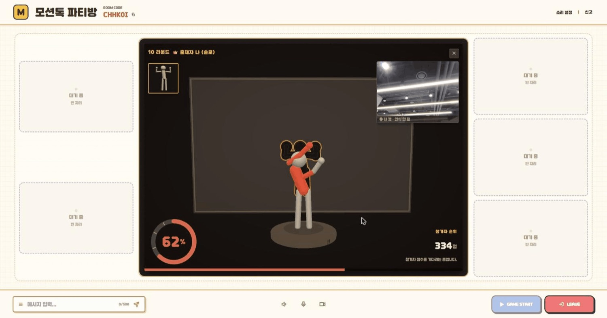
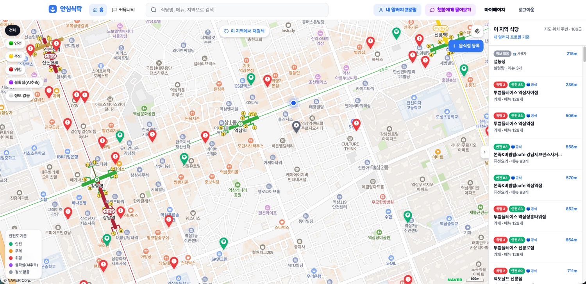
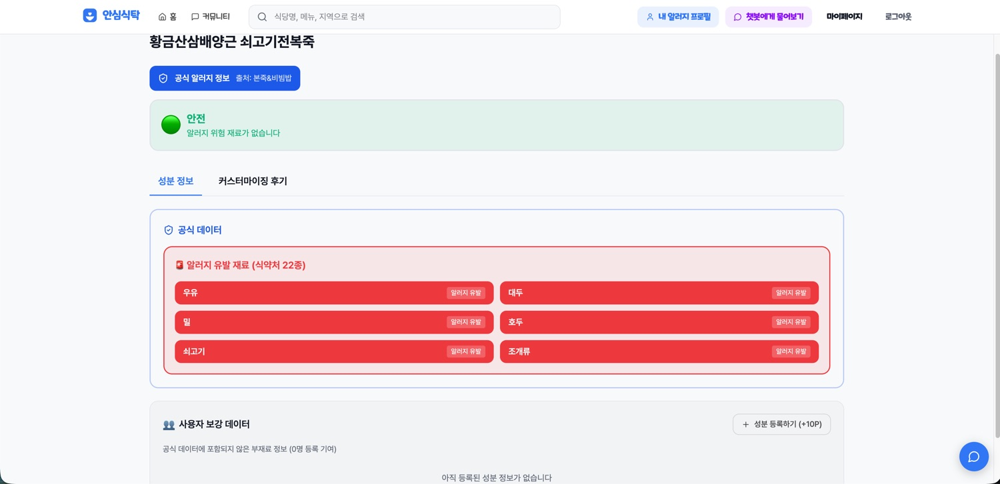
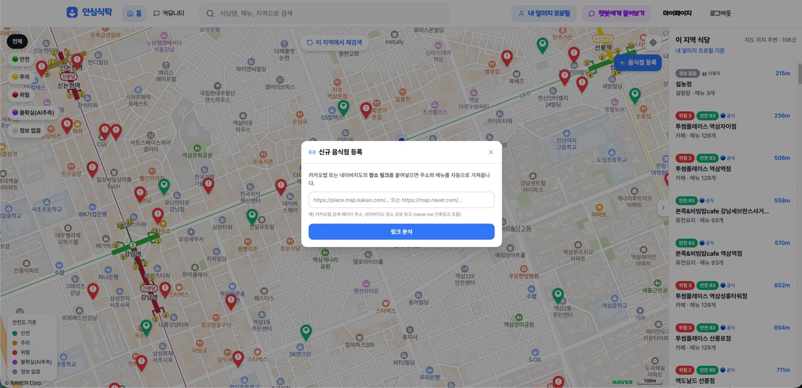

BACKEND ENGINEER · PORTFOLIO 2026
임대연
Backend Engineer · Java / Spring Boot
백엔드에서 저는 인증, 데이터 정합성, 파이프라인을 주로 맡아왔습니다.
토큰이 필요 이상으로 오래 살아 있거나, 같은 요청이 두 번 들어와서 사고가 나거나,
이미 쌓인 기록이 나중에 조용히 고쳐지는 상황을 만들지 않는 것이 제 기준입니다.
토큰이 필요 이상으로 오래 살아 있거나, 같은 요청이 두 번 들어와서 사고가 나거나,
이미 쌓인 기록이 나중에 조용히 고쳐지는 상황을 만들지 않는 것이 제 기준입니다.
EMAIL
eodos6480@gmail.com
GITHUB
github.com/rilac
BLOG
velog.io/@asd990702
01
ProfileOverview엔테나MoToK안심식탁SOOP회고
Profile & Tech Stack
SECTION 01Education
삼성 청년 SW·AI 아카데미 (SSAFY) 15기
2026.01 ~ 2026.12 예정 · 재학 중
관통 · 공통 · 자율 프로젝트 3회 수행 (본 포트폴리오 프로젝트 3건)
상명대학교 (서울) · 경영학 & 컴퓨터과학 복수전공
2018.03 ~ 2025.09 졸업
요구사항 뒤의 목적을 먼저 확인하는 습관이 경영학 전공에서 왔습니다
KIC캠퍼스 Java 풀스택 국비지원교육
2023.01 ~ 2023.06 (6개월) 수료
SECTION 02Certificate & Record
삼성 SW 역량테스트 A형
2026.04.22 취득
2026 SSAFY AI 챌린지 (Kaggle · 팀 A175)
팀 최고 Private 0.89
Qwen2.5-VL 파인튜닝 실험과 데이터 처리를 맡아 멀티모달 학습 파이프라인을 경험
SQLD (SQL 개발자)
2026.09.11 취득 · 한국데이터산업진흥원
OPIc IM2
2026.07.01 취득
SECTION 03Activity
SSAFY Spring Boot 스터디 · 공동 리더 (약 20명)
2026.03 ~ 진행 중
명세서를 읽고, 직접 구현하고, 강의 영상으로 검증하는 학습 사이클을 설계하고 실습 레퍼런스 코드와 강의 영상 5편을 제작했습니다.
https://www.ssafy-study.site/studies/1
https://www.ssafy-study.site/studies/1
알고리즘 풀이 기록 · 기술 블로그
https://github.com/rilac/BKJN
https://velog.io/@asd990702
https://velog.io/@asd990702
SECTION 04한 줄 소개
"지금 동작한다"와 "동시에 들어와도 동작한다"는 다른 문제라고 생각합니다.
서버가 틀린 값을 남기지 않게 만드는 것을 제 일로 봅니다.
서버가 틀린 값을 남기지 않게 만드는 것을 제 일로 봅니다.
깊이 공부한 것인증 토큰의 수명 관리(팬텀 토큰 · 회전 · 즉시 철회)와 동시성 아래의 멱등성(Redis Lua · SETNX ·
INSERT IGNORE · DB 트리거)을 네 프로젝트에서 모두 맡으며 가장 깊이 파고들었습니다.단기 목표틀리면 곧바로 사고가 되는 도메인(인증 · 정산 · 주문)에서 테스트와 관측 지표까지 포함해 기능을 끝내는 백엔드가 되는 것.
중장기 목표트래픽이 늘어도 정합성이 무너지지 않는 시스템을 설계하고, 그렇게 설계한 근거를 숫자로 설명할 수 있는 사람이 되고 싶습니다.
SECTION 05Tech Stack주 스택 · Java / Spring Boot
LANGUAGE
 Java 17·21
Java 17·21
 TypeScript
TypeScript
 JavaScript
JavaScript
 Python
Python
Java 17·21
TypeScript
JavaScript
Python
BACKEND
 Spring Boot 3·4
Spring Security
JPA / MyBatis
JWT
Gradle
Spring Boot 3·4
Spring Security
JPA / MyBatis
JWT
Gradle
Spring Boot 3·4
Spring Security
JPA / MyBatis
JWT
Gradle
DATA
 MySQL 8
MySQL 8
 PostgreSQL 18
PostgreSQL 18
 Redis 7·8
Flyway
Redis 7·8
Flyway
MySQL 8
PostgreSQL 18
Redis 7·8
Flyway
FRONTEND
 React 18·19
React 18·19
 Vue 3
Vite
Vue 3
Vite
 Tailwind
Tailwind
React 18·19
Vue 3
Vite
Tailwind
INFRA
 Docker Compose
Docker Compose
 AWS EC2·RDS·S3
AWS EC2·RDS·S3
 Nginx
Nginx
 GitLab CI
GitLab CI
Docker Compose
AWS EC2·RDS·S3
Nginx
GitLab CI
REALTIME
STOMP / WebSocket

LiveKit SFU Spring AICOLLAB
 Git
Git
 Jira
Notion
Postman · Swagger
Jira
Notion
Postman · Swagger
Git
Jira
Notion
Postman · Swagger
02
ProfileOverview엔테나MoToK안심식탁SOOP회고
Projects Overview최근 순 · 팀 규모와 내 역할을 먼저 밝힙니다
PROJECT 1SSAFY 특화 PJT
엔테나 (Antenna)
2026.08.19 ~ 09.13 (4주)·6인 팀·팀장 · 백엔드 · 인프라 (기여도 30%)
예측을 커밋·리빌로 봉인해 블록체인에 기록하고, 누구나 검산할 수 있게 만든 AI 투자 예측 플랫폼
공공데이터 6년치를 하루 1만 콜 한도 안에서 백필해서, 시세 파이프라인의 98.7%를 혼자 만들었습니다
원장·체결·예측은 DB 트리거로 UPDATE·DELETE 자체를 막아, 운영자도 사후에 고칠 수 없습니다
인증(OAuth 2.0 + JWT, Redis refresh 회전)을 전담했습니다
Spring Boot 4PostgreSQL 18Redis 8React 19DockerGitLab CI
PROJECT 2SSAFY 공통 PJT🏆 전체 1등
MoToK (MotionTok)
2026.07.15 ~ 08.25 (6주)·6인 팀·팀장 · 백엔드 (기여도 30%)
웹캠 모션 인식(MediaPipe)으로 최대 8명이 함께 즐기는 실시간 멀티플레이 미니게임 플랫폼
로그아웃·밀어내기·탈퇴 등 세션 종료 경로 5개가 흩어져 있어 한 클래스로 통합했습니다. REST·STOMP·SFU 세 층을 한 번에 끊습니다
다중 탭에서 동시에 토큰을 갱신하면 서로의 세션을 죽이던 문제를, sid 가드와 Redis Lua 원자 실행으로 해결했습니다
정산이 두 경로에서 동시에 들어와도 SETNX로 한쪽만 실행되게 만들었습니다
Spring Boot 4MySQL 8.4Redis 7.4STOMPLiveKit SFUVue 3
PROJECT 3SSAFY 관통 PJT
안심식탁
2026.06.05 ~ 06.26 (3주)·2인 팀·팀장 · 백엔드 전반 (기여도 70%)
식약처 22종 알러지 기준으로 메뉴 안전도를 자동 판정하고, 재료 정보가 없는 메뉴는 생성형 AI가 보완하는 외식 플랫폼
카카오 로컬 API가 쿼리당 45건만 돌려줘서, 전국을 쿼드트리로 재귀 4분할해 타일 단위로 수집했습니다
JWT 원본은 Redis에만 두고 클라이언트는 해시값만 들고 있는 Phantom Token 구조로, 탈취돼도 즉시 무효화됩니다
생성형 AI가 추정한 알러지 정보는 별도 테이블에만 쌓이고, 사용자 합의 없이는 '위험' 판정으로 올라가지 않습니다
Spring Boot 3.3Spring AIMySQL 8RedisMyBatisVue 3
PROJECT 41인 개발 · 배포·운영 경험
SSAFY SOOP
2026.03.23 ~ 07.24·1인·기획 · 개발 · 배포 · 운영 전부
Mattermost 계정으로 교육생임을 증명하고, 누가 썼는지는 서버 응답에조차 싣지 않는 익명 커뮤니티
기획부터 배포·운영까지 혼자 맡아 커밋 63건을 전부 직접 냈고, 16기 오픈부터 졸업 기수 차단까지 실사용자를 받으며 운영했습니다
"타인 글 첫 조회에서만 500"이라는 재현하기 까다로운 장애를 원인까지 추적해 제거했습니다
테스트 32클래스·181개, Flyway로 스키마 버전을 V1부터 V17까지 관리했습니다
Spring Boot 3MySQLRedisFlywayReact 18GitHub Actions
03
ProfileOverview엔테나MoToK안심식탁SOOP회고
Project 1. 엔테나 — 검산 가능한 AI 투자 예측 플랫폼서비스 구조와 내 담당 영역
기간 2026.08.19 ~ 09.13 (4주)
팀 6인 — 팀장 · 백엔드 · 인프라 (기여도 30%)
기여 작업 커밋 83건
배포 stock-antenna.com 운영 중
저장소 github.com/rilac/Antenna
서비스 — 예측을 봉인하고, 판정을 검산합니다
등록 시점에 예측을 커밋 해시로 봉인하고, 영업일마다 머클루트 1건을 온체인에 앵커링합니다. 나중에 예측 내용을 바꾸는 걸 구조적으로 막기 위해서입니다. 회원은 판정 결과를 3단계로 직접 검산할 수 있습니다.
AI 리서치가 재무·공시·뉴스를 근거 카드로 제시하면, 회원은 그 근거를 골라 예측을 등록합니다. 한번 등록한 예측은 대상·방향·목표가·기간을 고치거나 지우는 API 자체가 없습니다. 모의투자에서는 과거 일봉을 게임일 단위로 재생하고, 시즌이 끝나면 AI가 복기 리포트를 씁니다.
종목 상세 — AI가 뽑은 긍정 요인 · 리스크 요인 · 확인할 점을 근거로 선택해 예측 등록

기술 아키텍처

내 담당
시세 수집 배치 · PostgreSQL 원장 · OAuth/JWT 인증 · 모의투자 시즌 엔진 · Docker/Nginx/GitLab CI
팀
스마트컨트랙트·체인 인덱서(김성령) · AI 리서치 본체(이상민) · 화면(4인 공동)
98.7%
market 도메인 코드 소유율
100%
백엔드 auth 도메인 (8파일 605줄)
6년치
일봉 백필 (2020-01-02~)
1,660영업일
KOSPI 시총 상위 300종목
04
ProfileOverview엔테나MoToK안심식탁SOOP회고
Project 1. 엔테나 — 문제 해결외부 API 한도 · LLM 비용 · 데이터 신뢰성
① 백필이 영원히 끝나지 않던 문제
공공데이터포털은 하루 호출 한도가 1만 건인데, 6년치(2020-01-02~) 일봉을 전부 받아야 했습니다. 종목별로 호출하면 하루 약 2,800콜이 나가 3년치도 못 받는 계산이라, 날짜(
basDt) 단위로 그날 전 종목을 한 번에 받는 방식으로 바꿨습니다.문제는 그다음이었습니다. 포털 응답이 일관되지 않았습니다. 데이터가 없는 날은
items를 빈 문자열로, 결과가 1건이면 배열 대신 객체로, 키가 틀리면 HTTP 200에 XML 에러를 실어 보내는 식이었습니다. DTO로 바로 바인딩하면 이런 경우마다 죽었기 때문에 JsonNode 트리로 파싱하도록 바꾸고, 수집할 게 없는 날과 아직 못 받은 날을 구분했습니다. 공휴일은 응답이 0건이라 계속 미수집으로 남아 매 회차 다시 호출되고 있었는데, 0건 응답도 수집 완료로 기록하게 고쳤습니다. 일봉 적재는 PostgreSQL의 ON CONFLICT upsert를 써서 같은 날을 몇 번 돌려도 결과가 같게 만들었습니다.공휴일이 연간 약 50일인데 매 회차 재호출하면 시간당 600콜, 17시간이면 하루 한도를 다 쓰는 구조였습니다. 재호출이 0건으로 줄면서 이 문제가 풀렸습니다.
② LLM 키 토큰 고갈 — AI 호출 구조 전면 개편
전 종목을 미리 브리핑해 두는 방식은 팀 공용 LLM 키를 하루 만에 말려서 서비스 전체가 멈췄습니다. 개편 전에 실측해 보니 하루 약 1,600콜에 토큰 1.2M이 나가고 있었고, 내역은 뉴스 요약 약 900, 종목 브리핑 301, 투자 포인트 300이었습니다.
그래서 사용자가 실제로 열어본 종목만 그 시점에 생성하도록 바꿨습니다. 투자 포인트를 요청 시점 생성으로 전환하고, 같은 종목에 동시 요청이 몰려도 종목별 JVM 락으로 한 번만 호출합니다.
AiClient에는 401이면 즉시 중단, 429면 백오프 재시도를 넣었고 OpenAI 호환 제공자로 교체할 수 있게(AI_BASE_URL) 열어뒀습니다. 출력은 temperature 0과, 입력에 없는 숫자를 차단하는 충실성 가드로 묶었습니다.백엔드 테스트 574건이 전부 통과한 상태에서, 이제 하루 호출 수는 시장 브리핑 1건에 실제로 연 종목 수와 시즌 종료 수를 더한 값이 됐습니다.
③ 원장을 아무도 못 고치게 — append-only 트리거
온체인 앵커가 외부 증명이라면 DB에도 내부 증명이 필요했습니다. 권한
REVOKE는 테이블 소유자에게 걸리지 않고, ddl-auto가 돌려면 앱 계정이 소유자여야 해서 쓸 수 없었습니다.대신 PostgreSQL BEFORE 트리거로
token_ledger·season_trades의 UPDATE/DELETE를 전부 거부했습니다. predictions는 판정 컬럼만 바뀌도록 허용해서 대상·방향·목표가·기간·등록시각은 불변이고, 리빌 전 salt는 @JsonIgnore로 직렬화를 막았습니다. 운영자나 관리자, 애플리케이션 버그까지 포함해 원장과 체결 기록을 고칠 수 있는 경로가 사라졌습니다.④ 로컬에선 재현되지 않던 신규 가입 100% 실패
2026-09-03에 신규 구글 가입이 전부 500으로 실패했습니다.
users.nickname을 NULL 허용으로 바꿨는데 ddl-auto: update는 기존 NOT NULL을 풀어 주지 않아서, 그보다 먼저 만들어진 배포 DB에만 옛 제약이 남아 있었습니다. 기존 회원 로그인은 INSERT를 타지 않아 멀쩡했고 로컬은 테이블을 새로 만들기 때문에 재현 자체가 되지 않았습니다.매 부팅마다 도는 멱등 스크립트에
ALTER ... DROP NOT NULL을 추가했습니다(이미 NULL 허용이면 no-op). 이 파일을 ddl-auto가 못 고치는 옛 스키마를 모아 두는 자리로 정하고, Testcontainers로 NOT NULL을 다시 건 DB를 띄워 부팅 SQL이 실제로 푸는지 검증하는 테스트를 붙였습니다. 이제 배포 DB는 부팅할 때 스스로 복구되고, 같은 유형의 스키마 드리프트도 한 곳에서 처리합니다.05
ProfileOverview엔테나MoToK안심식탁SOOP회고
Project 2. MoToK — 웹캠 모션 인식 실시간 파티게임서비스 구조와 내 담당 영역
기간 2026.07.15 ~ 08.25 (6주)
팀 6인 — 팀장 · 백엔드 (기여도 30%)
기여 커밋 476 / 1,809 (26.3%)
수상 공통 PJT 전체 1등
배포 motok.co.kr (서버 내림)
저장소 github.com/rilac/MoToK
서비스 — 서버는 시간과 정산만, 인식은 브라우저가
최대 8명이 한 방에서 웹캠으로 몸을 움직여 겨루는 미니게임 5종입니다(별따라 손따라, 캐치캐치 리듬, 그대로 멈춰라, 그림으로 말해요, 모션 낚시). 모션 인식과 점수 계산은 브라우저의 로컬 MediaPipe가 처리하고, 서버는 라운드 시각의 단일 권위와 범위 클램프, 정산 1회 실행 보장만 맡습니다.
8명분 영상을 서버가 추론하면 비용을 감당할 수 없었고, 반대로 전부 클라이언트에 맡기면 사람마다 라운드 종료 시점이 달라지는 문제가 있어서 이런 하이브리드 구조로 갔습니다. 예외는 '그림으로 말해요'인데, 채점에 외부 AI 키가 필요해 채점만 서버로 옮겼습니다. 정답어는 서버 세션에만 있고 프롬프트에는 포함하지 않아 블라인드 채점이 됩니다.
대기실 — 배경 제거 아바타를 로컬 캔버스에서 합성해 송출 (서버는 영상 처리 없음)

그대로 멈춰라 — 브라우저가 포즈 유사도를 계산하고, 서버는 라운드 시각과 정산만 소유

아키텍처 — 제어 평면과 미디어 평면의 분리
내 담당
인증 도메인 전체 · 세션 종료 통합 · Redis 게임세션 저장소와 정산 가드 · 유령 멤버 정리 · 그림으로 말해요 · 별따라 손따라 · 관리자 API
팀
LiveKit 도입·설정과 인프라(compose · CI · nginx 운영)는 팀원 담당
06
ProfileOverview엔테나MoToK안심식탁SOOP회고
Project 2. MoToK — 문제 해결세션 · 동시성 · 실시간 연결
① 로그아웃했는데 계속 온라인이던 계정
연결을 끊어야 하는 층이 REST, STOMP, LiveKit 세 개였는데, 종료 처리는 로그아웃·밀어내기·탈퇴·비밀번호 변경·재설정 다섯 개 경로에 흩어져 있었습니다. REST는 sid를 폐기하면 다음 요청부터 바로 막히지만, STOMP는 인증이 CONNECT 시점 한 번뿐이라 이미 열린 소켓에는 그 폐기가 소급되지 않습니다. LiveKit은 한술 더 떠서 접속 토큰을 미디어 서버가 자기 비밀로 검증하기 때문에, 앱에서 sid를 폐기해도 아예 닿지 않습니다. 그 결과 탈퇴한 계정이 하트비트로 접속 상태를 되살려 친구 목록에 온라인으로 남고, 개인 큐로 귓속말과 초대를 계속 받고, 화상에 그대로 붙어 있는 상황이 벌어졌습니다.
다섯 개 경로를
SessionTerminator 클래스 하나로 합치고, sid 폐기, 프레즌스 제거, 방 퇴장, STOMP 세션 강제 종료, LiveKit의 RemoveParticipant 호출 순서를 그 안에 못박았습니다(알림 프레임이 나갈 시간을 2초 주고 소켓을 끊습니다). 밀어내기 알림도 대상 sid를 지목해서 보내도록 바꿔, 같은 계정으로 새로 로그인했을 때 방금 로그인한 세션이 스스로를 튕겨내는 오판을 막았습니다.그 결과 방장이 누군가를 밀어냈을 때 게임 시작 권한이 비는 시간이 17초에서 0초가 됐고, 나중에 정리 단계가 하나 더 생겨도 고칠 곳이 한 군데로 줄었습니다.
② 새 기기로 로그인했더니 잠시 뒤 로그아웃되던 문제
단일 세션 정책이라 새로 로그인하면 키를 덮어쓰는데, 밀려난 옛 기기의 갱신 스케줄러가 뒤늦게 옛 토큰으로 갱신을 시도했습니다. 해시만 비교하던 구현은 이를 모르는 토큰, 곧 유출로 판정해 재사용 탐지를 발동시켰고 새로 로그인한 세션까지 지워 버렸습니다. 탭을 여러 개 열어두는 게 기본인 웹 게임이라 동시 갱신은 상시 상황이기도 했습니다.
그래서 판정 기준을 바로잡고 판정 전체를 원자 단위로 묶었습니다. 먼저 sid 가드를 넣어, 저장된 sid와 제시된 토큰의 sid가 다르면 재사용 판정 없이 그냥 거절합니다. 검사와 회전은 Redis Lua 한 덩어리로 실행하는데, 나눠서 실행하면 동시 요청 둘이 각자 회전해 서로의 토큰을 죽이기 때문입니다. 회전 직후에는 30초 유예 창을 두어 직전 토큰도 받아 주고, 창을 넘긴 것만 진짜 유출로 봅니다. 저장은 SHA-256 해시로 합니다. Redis는 인증 없이 붙는 일이 잦아 덤프나 MONITOR로 원문이 새면 그 자체가 남의 세션을 되살리는 자격증명이 되기 때문이고, 고엔트로피 JWT라 느린 bcrypt까지는 필요 없었습니다.
이제 밀려난 기기의 뒤늦은 갱신은 새 세션을 유지한 채 거절되고, 다중 탭 동시 갱신이 유출로 오탐되는 일도 없어졌습니다.
③ 정산이 두 경로에서 동시에 들어오는 문제
타이머 만료 스케줄러와 전원 제출 조기 정산이 동시에 정산을 부를 수 있었습니다. 세션 상태가 애초에 Redis에 있어서 DB 트랜잭션 경계로는 막을 수 없었습니다.
game:session:{roomId} Hash(TTL 30m), :scores, :ended:{sessionId}의 3키 구조를 설계하고 SETNX를 선점한 한쪽만 정산을 실행하게 했습니다. 점수는 HSETNX로 참가자당 최초 1회만 받고, 같은 가드를 그림게임 AI 채점 정산에도 재사용했습니다. 재제출은 조용히 무시되므로 중복 정산과 중복 점수 제출 경로가 사라졌습니다. 이후 팀원이 방장 강제종료를 세 번째 호출자로 붙이고 로테이션 게임용으로 가드 키에 roundIndex를 더했는데, 가드는 손대지 않고 호출자만 늘린 것이라 설계 의도대로였습니다.④ 통보 없이 사라진 사용자가 만든 빈 방
퇴장이 REST 단일 경로라서, 탭을 강제로 닫거나 브라우저가 크래시하거나 주소창으로 이탈하면 Redis members에 유령 멤버가 남았습니다. 실제로는 0명인 방이 로비에 계속 쌓였습니다.
새 하트비트 프로토콜을 만들지 않고 서버가 이미 아는 신호를 재사용했습니다. 게임룸에 입장하면 항상 걸리는
/topic/rooms/{id}/chat 구독을 재실 신호로 등록하고, DISCONNECT 뒤 유예 안에 재연결이 없으면 기존 leave를 호출합니다. leave는 멱등이라 REST 퇴장과 겹쳐도 안전하고, 방 삭제와 방장 위임 로직도 그대로 쓰기 때문에 분기를 늘리지 않고 유령 멤버를 없앨 수 있었습니다.07
ProfileOverview엔테나MoToK안심식탁SOOP회고
Project 3. 안심식탁 — 알러지 안전도 판정 외식 플랫폼서비스와 데이터 확보
기간 2026.06.05 ~ 06.26 (3주)
팀 2인 — 팀장 · 백엔드 전반 (기여도 70%) (프론트·배포 인프라는 팀원)
규모 REST 72개 · 테이블 33개(초기 15개에 18개 추가) · MyBatis 매퍼 15개(6개 신규)
저장소 github.com/rilac/Ansim-Siktak
문제 — "이 메뉴 먹어도 되나?"가 매 끼니 반복됩니다
개인 알러지·기피 음식을 등록해두면 메뉴마다 안전 / 주의 / 위험을 자동으로 판정해주는 서비스입니다. 프랜차이즈는 공식 알러지표가 있지만 개인 식당이나 신규 메뉴는 정보가 거의 없다는 게 출발점이었습니다. 정보가 없는 메뉴는 생성형 AI가 추정해서 보완하지만, 그 추정이 그대로 '위험' 확정으로 올라가지는 않습니다.
지도 — 내 알러지 프로필 기준으로 주변 식당을 안전도 색상으로 표시

메뉴 상세 — 식약처 22종 기준 유발 재료를 출처와 함께 표시

보여줄 데이터가 없으면 서비스가 성립하지 않습니다
카카오 로컬 키워드 검색은 rect 하나당 최대 45건(size 15 × page 3)만 돌려줍니다. 브랜드명으로 한 번 긁으면 전국 지점이 45건에서 잘리니, 페이지를 넘겨서는 풀 수 없고 API 제약상 공간 자체를 나눠서 긁어야 했습니다.
대한민국 전역(
lng 124.5~132.0 / lat 33.0~38.7)에서 시작해 meta.total_count가 45를 넘으면 중점을 기준으로 4사분면으로 재귀 분할합니다(MAX_DEPTH 12). 45건 이하로 내려간 타일에서만 page 1~3을 돌고, 타일 경계에서 겹치는 건 카카오 place id로 dedupe합니다. 수집한 뒤에는 category_group_code 필터와 브랜드 판별로 동명 오탐을 걸러내고 insertIgnore로 중복을 막았습니다.콜드스타트는 기동 시 멱등 시딩으로 풀었습니다.
SeedRunner(ApplicationRunner)가 데몬 백그라운드 스레드로 시딩을 돌려 서버 기동을 막지 않고, brand_seed 플래그로 끝난 브랜드는 건너뛰어 재기동해도 무해합니다. 브랜드 단위로 try/catch를 둬 실패를 격리하고 다음 기동에 재시도합니다. 이렇게 프랜차이즈 6개 브랜드의 공식 메뉴 565건과 알러지 19종 매트릭스를 직접 수집·정제해서, 첫 사용자에게 보여줄 공식 데이터를 확보했습니다.08
ProfileOverview엔테나MoToK안심식탁SOOP회고
Project 3. 안심식탁 — 인증 설계와 AI 사용 원칙JWT를 즉시 철회하기 · AI를 어디까지 믿을 것인가
① 세션에서 JWT로 넘어간 대가: 즉시 무효화가 안 된다
SPA로 프론트를 분리하면서 JWT를 도입했는데, 토큰이 탈취되면 만료 시점까지는 강제 로그아웃을 시킬 방법이 없었습니다.
그래서 원본 JWT는 Redis에
auth:access:<sha256> / auth:refresh:<sha256> 형태로 저장하고, 클라이언트에는 64자 해시값만 내려주는 Phantom Token 구조로 바꿨습니다(access는 응답 바디, refresh는 Path=/api/v1/auth인 HttpOnly 쿠키로). 요청이 오면 [0-9a-f]{64} 정규식으로 형식부터 걸러낸 뒤 Redis에서 원본을 조회하고, 서명·만료·typ을 검증합니다. typ 검증이 없으면 refresh 토큰을 access로 쓰는 교차 사용이 가능해집니다. Redis 키의 TTL을 토큰 만료 시간과 맞춰뒀기 때문에 만료를 따로 관리하는 코드가 필요 없고, 키 하나를 지우면 그게 곧 강제 로그아웃입니다. Redis를 무영속(--save '' --appendonly no)으로 둔 것도 같은 맥락으로, 재시작되면 전원 로그아웃되는 걸 보안 동작으로 삼았습니다.이렇게 하면 클라이언트는 클레임이나 서명을 볼 수 없고, 서버는 키 삭제 한 번으로 세션을 끊을 수 있습니다. 다만 이번 배포는 HTTP 구간이라 refresh 쿠키를
secure=false로 뒀고 CORS도 allowedHeaders=*로 열어뒀는데, HTTPS 전환과 헤더 화이트리스트 적용은 다음 과제로 남았습니다.② AI 추정은 경고를 확정하지 않습니다
알러지 서비스에서 틀린 '안전'은 사고가 되고, 남발된 '위험'은 무용지물이 됩니다. 그래서 출처를 컬럼 플래그로 구분하지 않고 테이블 자체로 나눴습니다. 합치는 경로가 코드에 없으면 섞일 일도 없기 때문입니다.
AI 추정 결과는 절대 '위험' 확정 근거가 되지 않습니다.
AI_ESTIMATED 출처로만 흡수되고 사용자 합의 신뢰도 60% 이상일 때만 위험이 확정됩니다재료 추정은 여러 메뉴를 한 번의 호출로 묶어 요청하고, likelihood는 1~100, 메뉴당 최대 8개까지 받으며, 후보 목록 밖의 재료는 만들지 못하게 막았습니다.
③ 링크 한 줄로 식당 등록: 네이버는 LLM, 카카오는 코드로 파싱
네이버는 LLM으로 파싱합니다.
window.__APOLLO_STATE__ 블롭은 거대하고 스키마가 자주 바뀌어서 결정적 파서가 계속 깨졌습니다. 그래서 Spring AI BeanOutputConverter로 record에 맞춰 파싱하게 하고, 노이즈 필드 21종을 재귀로 제거한 뒤 80,000자로 잘라 토큰을 줄였습니다.카카오 panel3는 구조가 안정적이라 코드로 파싱합니다. LLM 비용과 비결정성을 감수할 이유가 없기 때문입니다.
응답에 charset이 없어 한글이 깨지던 문제는 바이트로 받은 뒤 UTF-8로 명시 디코딩해서 해결했고, 간헐적인 429는 UA 위장, 3회 백오프, 엔드포인트 폴백으로 처리했습니다.
신규 음식점 등록 — 지도 링크 한 줄이면 주소·메뉴·가격이 자동으로 채워집니다

09
ProfileOverview엔테나MoToK안심식탁SOOP회고
Project 4. SSAFY SOOP — 1인 기획·개발·배포·운영익명성을 아키텍처로 보장하고, 운영 장애를 직접 추적했습니다
기간 2026.03.23 ~ 07.24
팀 1인 — 커밋 63건 100% 단독
규모 REST 39 · 엔티티 14 · 테스트 32클래스 / @Test 181 · Flyway V1~V17
운영 ssafy-soop.site (서버 내림)
저장소 github.com/rilac/SSAFY_BLIND
익명성을 서버 구조로 보장하기
Mattermost 계정으로 교육생 여부만 확인하고, 누가 썼는지는 서버 응답에도 담지 않는 익명 커뮤니티입니다. 자체 회원가입을 만들면 교육생인지 증명할 방법이 없어서, 이미 전원이 쓰는 Mattermost 계정을 신원 증명 수단으로만 빌리는 구조를 택했습니다. 그 결과 비밀번호를 저장하는 테이블 자체가 없습니다.
MM 호출에는 connect 3s / read 5s 타임아웃을 두었고, 4xx는 401, 타임아웃과 5xx는 503으로 돌려줘서 인증 실패와 외부 장애가 구분됩니다.
관리자 경로는 Role 인가 위에 15분 TTL step-up 마커를 한 겹 더 두었습니다. 해시가 설정되지 않았으면 fail-closed로 전면 차단하고, 기동 시 BCrypt 형식 정규식으로 오설정을 잡습니다.
운영 장애 — "타인 글 첫 조회에서만 500"
'16기 글만 안 보인다'는 제보로 시작됐습니다. 기수 필터 문제로 착각하기 딱 좋은 증상이었습니다. 실제 원인은 직전 릴리스에서
insertIgnore 6곳에 한꺼번에 붙인 @Modifying(clearAutomatically=true)였습니다. INSERT 직후 영속성 컨텍스트를 비우다 보니 이미 로드해둔 Post가 detach되고, author의 LAZY 프록시를 초기화하는 시점에 LazyInitializationException이 터졌습니다.증상이 이상하게 부분적이었던 이유도 따로 있었습니다. 본인 글이나 24시간 내 재조회, touch 갱신은 애초에 INSERT를 타지 않아서 멀쩡했고, 실패하는 건 오직 첫 조회자뿐이었습니다. 신규 글은 모두가 첫 조회자다 보니 마치 전원이 실패하는 것처럼 보였을 뿐입니다. 같은 원인으로 신고 누적 자동 숨김 기능도 detach된 엔티티에 걸려 조용히 유실되고 있었는데, 이건 로그에 흔적조차 남지 않아서 한동안 몰랐습니다.
호출부에 이미 사전 존재 확인 가드가 있어서 clear로 얻는 이득이 없다는 걸 확인하고 6곳 모두에서 제거했습니다. 같은 실수가 반복되지 않도록 각
insertIgnore에 '켜지 말 것' 주석을 남기고, GlobalExceptionHandler가 500/503에 스택트레이스를 남기도록 고쳤습니다. 검증은 Mockito 대신 H2를 MySQL 모드로 띄워 실제 세션에 가까운 조건에서 회귀 테스트를 돌렸습니다.catch로 막을 수 없던 중복 INSERT 500
좋아요를 더블클릭하거나 두 탭에서 동시에 조회하면 500이 났습니다. IDENTITY 전략이라
save()가 즉시 INSERT를 날리고, 유니크 위반이 나면 Hibernate가 트랜잭션을 rollback-only로 마킹합니다. 예외를 catch로 삼켜도 커밋 시점에 UnexpectedRollbackException이 터집니다.그래서 6개 경로를 네이티브
INSERT IGNORE로 바꿔, 중복이 예외 대신 0행 반환이 되게 했습니다. 다만 FK나 NOT NULL 위반까지 경고로 강등되는 위험이 있어 사전 존재 확인 가드를 남기고, '가드를 제거하면 무증상 데이터 유실'이라는 경고 주석을 붙였습니다.토큰 회전 · 운영 품질
RFC 9700 유예 창을 적용했습니다. 회전은 구 RT 삭제, tombstone, 신 RT 등록, 유예 마커까지 Lua 스크립트 하나로 원자 실행합니다. 유예(20s) 안의 재제시는 다중 탭 경합으로 보고 직전 RT를 다시 발급하고, 창 밖에서 온 것만 탈취로 판정해 전 세션을 폐기합니다.
Flyway는 V1부터 V17까지 관리하고, prod에서는
flyway.enabled와 ddl-auto: validate로 이중 검증합니다. V12에서 refresh_tokens 테이블을 폐기하면서 정리 스케줄러 31줄이 통째로 사라졌습니다(Redis TTL로 자연 만료).아직 남은 부채도 알고 있습니다. 레이트리밋은
ConcurrentHashMap 인메모리라 단일 인스턴스를 전제로 합니다. Redis를 이미 쓰는데도 남겨둔 지점이라, 수평 확장할 때 INCR + EXPIRE로 교체해야 한다고 주석에 적어 두었습니다.10
ProfileOverview엔테나MoToK안심식탁SOOP회고
회고 ① 못한 것과 한계아쉬운 지점을 알고 있다는 것이 다음 설계의 출발점입니다
하려고 했는데 못한 것
게임 세션 복구(MoToK)에서 끊긴 참가자가
GAME_START를 못 받는 문제를 0~3층으로 분해해 명세 개정 초안을 썼지만 팀 합의 전에는 서버 구현에 들어가지 않기로 해 0층(끊김 노출·강제 재접속·발행 실패 안내)까지만 구현했습니다. 1층 구독자 기반 roster 확정, 2층 세션 스냅샷 복구, 3층 ack로 반열림 소켓 탐지가 남았습니다.미사용 코드 정리(MoToK)로는 BE 매핑 62개와 FE 호출 경로를 대조하고 Spring 빈 · enum JSON 값 · 동적 문자열 참조 3가지 오탐을 손으로 걸러 조사 문서까지 냈지만, 공용 코드라 팀 합의를 기다리며 한 줄도 지우지 않았습니다.
MoToK와 엔테나에서는 부하 테스트를 하지 못했습니다. 동시성 로직(SETNX 가드 · Lua 회전)을 Mockito 단위 테스트까지만 검증했고 k6·JMeter 같은 부하 스크립트는 끝내 쓰지 못했습니다. 팀이 관측 지표(actuator · node-exporter)를 붙여 둔 상태에서도 몇 명까지 버티는가에 숫자로 답하지 못했습니다.
SOOP은 모더레이션 강화와 북마크 폴더를 WORKLOG §6 백로그에 적어 둔 채로 마무리했습니다. 혼자 만드는 서비스라 무엇을 안 할지 정하는 일이 매번 가장 어려운 판단이었습니다.
팀이 넣어 둔 관리자용 Spring Batch 일별 통계가 실제 운영 판단에 쓰이지 않는다는 걸 확인하고, 안심식탁에서 폐기와 대체(활동 로그)를 내가 주도했습니다. 남겨두면 유지비만 드는 코드였습니다.
전체 테스트가
OutOfMemoryError로 깨지던 문제를 힙을 늘리는 대신 컨텍스트 캐시를 32개에서 8개로 줄이고 ddl-auto: create를 쓰는 방식으로 잡았습니다. 개인 브랜치에서 9건 실패에 6분이던 테스트가 714건 통과에 55초가 되는 것까지 실측했지만 엔테나 dev에는 반영하지 못했습니다.엔테나 프론트엔드는 4명이 나눠 쓰는 공용 영역이라, 내 몫은 내가 만든 API를 화면에 붙이는 연결 작업이 중심이었습니다. 화면 설계까지 끌고 가 보고 싶었지만 분업상 양보했습니다.
MoToK 미디어 서버에서 LiveKit 도입과 튜닝은 팀원 담당이라, 내가 만진 지점은 세션 종료 시
RemoveParticipant 한 곳뿐입니다. SFU를 직접 운영해 보는 경험은 다음으로 미뤘습니다.기술적 한계와 개선 방안
MoToK은 STOMP simple broker와 인메모리 스케줄·레지스트리를 쓰는 한 스케일아웃이 불가능한 단일 인스턴스 전제입니다. 서버 재시작 시 진행 중 게임의 종료 스케줄도 유실됩니다(현재는 새 게임 시작 시 덮어써 복구하는 임시 대응). 다음 단계는 외부 브로커(RabbitMQ/Redis Pub-Sub)와 분산 락(ShedLock)으로 옮기는 것입니다.
SOOP은 이미 Redis를 쓰고 있으면서 로그인 제한만
ConcurrentHashMap으로 인메모리 레이트리밋을 남겨 뒀습니다. INCR + EXPIRE 카운터로 교체하면 그대로 수평 확장할 수 있습니다.안심식탁은 테스트가 0건이고(최종보고서에 한계로 명시), SOOP은 컨트롤러 슬라이스(
@WebMvcTest)가 비어 있습니다. 네 프로젝트 모두 커버리지 측정 도구(JaCoCo)를 붙이지 않아 수치로 말할 수 없습니다. 다음 프로젝트에서는 JaCoCo와 커버리지 게이트를 CI 1일차에 넣겠습니다.엔테나는 배치와 API가 한 프로세스였습니다.
@Scheduled 기본 스레드 풀은 1개인데 풀 크기를 따로 두지 않아 모든 배치가 한 스레드를 나눠 쓰고 있었습니다. 40분짜리 AI 판정 배치를 켜면 5초 주기 체인 인덱서가 멈추는 구조라, 켜기 전에 전용 데몬 스레드로 분리해 막았습니다. 돌아보면 애초에 배치 워커를 별도 프로세스로 분리하는 게 맞는 구조였습니다.안심식탁은 3주라는 기간을 이유로 테스트를 건너뛰고(0건) 검증을 Swagger 수동 테스트에 의존했습니다. 최종보고서에 한계로 명시해 뒀지만, 기간이 짧을수록 오히려 회귀 비용이 크다는 걸 이후 프로젝트에서 체감했습니다.
안심식탁은 HTTPS를 끝내지 못했습니다. refresh 쿠키가
secure=false이고 CORS는 allowedHeaders=*여서, 팬텀 토큰으로 얻은 이득을 전송 구간에서 깎아먹는 구성이었습니다.11
ProfileOverview엔테나MoToK안심식탁SOOP회고
회고 ② 배운 것과 팀에 남긴 것네 번의 프로젝트에서 습관으로 굳은 것들
새로 배운 것
무상태를 포기하면 뭘 얻는가. 팬텀 토큰, RFC 9700 유예 창, Redis Lua 원자 실행, SETNX 멱등 가드, PostgreSQL append-only 트리거를 네 프로젝트에서 거의 매번 썼습니다. 그러면서 '동시에 들어오면 어떻게 되는가'를 먼저 묻는 게 습관이 됐습니다.
하루 1만 콜 한도, 쿼리당 45건, LLM 토큰 예산, 8명분 영상 추론 비용. 매번 이 제약을 먼저 재고 나서야 구조가 정해졌고, 이런 경험이 네 번 반복됐습니다.
시세 수집에
RestClient를 쓴 이유는 수집이 스케줄러 스레드에서 도는 블로킹 배치라 논블로킹으로 얻을 게 없고, 포털 페이징은 totalCount를 받아야 다음 장을 알 수 있어 어차피 순차이기 때문입니다. 그 뒤로 기술을 고를 때는 근거를 그 프로젝트 안에서 찾는 습관이 생겼습니다.엔테나의 가입 500(
ddl-auto가 못 푼 옛 NOT NULL)도 SOOP의 첫 조회 500(clearAutomatically)도 로컬에서는 멀쩡했습니다. 둘 다 '언제부터 달라졌나' 대신 '누가 이 경로를 타고 누가 안 타는가'를 갈라 보고서야 원인에 닿았습니다. 재현이 안 되면 조건을 좁히는 게 아니라 대상을 갈라야 한다는 걸 두 번 겪고 배웠습니다.팀에 남긴 것 · 기록
협업숫자와 문서로 남기기
개선은 커밋 본문에 실측표로 남겼습니다. 테스트는 6분에서 55초로, AI 호출은 하루 1,600콜에서 온디맨드로 바뀌었고, 나중에 근거를 다시 찾을 필요가 없었습니다.
백엔드에서 프론트로 넘기는 인계 문서(회원가입), 명세 개정 초안, 미사용 코드 조사 문서를 남겨 다음 사람이 이어받을 수 있게 했습니다.
SSAFY Spring 스터디 공동 리더로서 약 20명에게 명세서를 읽고, 직접 구현하고, 강의로 검증하는 사이클을 설계하고 강의 5편을 제작했습니다.
제작한 강의 · 명세서 (전체 공개)
01REST API 기본 — 인사 메시지 반환https://youtu.be/QTvBdIQksOg
02게시글 CRUD REST APIhttps://youtu.be/-FGd6NYZvqQ
03회원 관리 + UUID 기반 세션 인증https://youtu.be/FOwA-AMgENY
04ApiResponse<T> 통일 · 도메인 독립성https://youtu.be/Ya7wtZzqJcQ
05MySQL 영속화 · JPA로 코드 축약https://www.youtube.com/watch?v=35_48r9_AcI
명세회차별 요구사항 명세서https://www.ssafy-study.site/studies/1
기록말하려면 근거가 남아 있어야 합니다
이 포트폴리오에 쓴 수치는 전부 코드와 커밋에서 다시 확인한 것입니다. 근거가 없는 항목은 '측정하지 못했다'라고 적었고, 면접에서 '이거 어디 코드예요?'라는 질문에 파일 경로로 답할 수 있는 상태를 목표로 삼았습니다.
12
THANK YOU
읽어 주셔서 감사합니다.
네 번의 프로젝트에서 인증과 정합성, 데이터 파이프라인을 맡아왔습니다.
다음 목표는 부하 테스트와 커버리지 측정까지 포함해서,
'몇 명까지 버티는가'에 숫자로 답할 수 있는 개발자가 되는 것입니다.
다음 목표는 부하 테스트와 커버리지 측정까지 포함해서,
'몇 명까지 버티는가'에 숫자로 답할 수 있는 개발자가 되는 것입니다.
Portfolio https://rilac.github.io/Portfolio/
GitHub https://github.com/rilac
Blog https://velog.io/@asd990702/posts
GitHub https://github.com/rilac
Blog https://velog.io/@asd990702/posts
NAME
임대연 · Backend Engineer
EMAIL
eodos6480@gmail.com
13